Trees up to 12 m tall.
12 ಮೀ. ಎತ್ತರದವರೆಗೆ ಬೆಳೆಯುವ ಮರಗಳು.
12 മീറ്റര് വരെ ഉയരമുളള മരങ്ങള്.
மரங்கள் 12 மீ. உயரம் வரை வளரக்கூடியது
Trunk fluted; bark greyish, smooth, sparsely lenticellate; blaze light orange.
ಕಾಂಡ ಕೊರಕಲುಗಳನ್ನೊಳಗೊಂಡಿರುತ್ತದೆ;ತೊಗಟೆ ಬೂದು ಬಣ್ಣದಲ್ಲಿದ್ದು ನಯವಾಗಿರುತ್ತದೆ ಹಾಗೂ ವಾಯು ವಿನಿಮಯ ಬೆಂಡು ರಂಧ್ರಗಳ ಸಮೇತವಿರುತ್ತದೆ;ಕಚ್ಚು ಮಾಡಿದ ಜಾಗ ತೆಳು ಕಿತ್ತಳೆ ಬಣ್ಣದಲ್ಲಿರುತ್ತದೆ.
ചാലുളള തായ്ത്തടി; അല്പ്പംമാത്രം ശ്വസനരന്ധ്രങ്ങളുളള മിനുസമുളള നരച്ച പുറംതൊലി; വെട്ടുപാടിന് ഇളം ഓറഞ്ച് നിറമാണ്.
மரத்தண்டு குறுக்குவெட்டுத் தோற்றத்தில் ஒழுங்கற்ற வளையமானது; மரத்தின் பட்டை சாம்பல் நிறமானது, வழுவழுப்பானது, ஆங்காங்கே லெண்டிசெல் கொண்டது; உள்பட்டை வெளிறிய ஆரஞ்சு நிறமானது.
Branchlets stout, terete, glabrous.
ಕಿರುಕೊಂಬೆಗಳು ದೃಢವಾಗಿದ್ದು ದುಂಡಾಗಿರುತ್ತವೆ ಹಾಗೂ ರೋಮರಹಿತವಾಗಿರುತ್ತವೆ.
അരോമിലമായ, ഉരുണ്ട്, ദൃഢമായ ഉപശാഖകള്.
சிறிய நுனிக்கிளைகள் தடித்தது, குறுக்குவெட்டுத் தோற்றத்தில் வளையமானது, உரோமங்களற்றது.
Leaves simple, alternate, distichous; stipules ovate to oblong, 0.7 cm long, caducous; petiole 0.4-1 cm long, stout, planoconvex in cross section, pubescent when young; lamina 12-30 x 5-11 cm, oblong to elliptic-oblong, apex abruptly shortly acuminate, base rounded, margin entire or distantly serrate, glabrous, coriaceous; midrib flat above; secondary_nerves 6-10 pairs, strong; tertiary_nerves strongly and broadly reticulate.
ಎಲೆಗಳು ಸರಳವಾಗಿದ್ದು ಪರ್ಯಾಯ ಜೋಡನಾ ವ್ಯವಸ್ಥೆಯಲ್ಲಿದ್ದು ಕಾಂಡದ ಎರಡೂ ಕಡೆ ಎದುರು ಬದರಿನ ಲಂಬಸಾಲಿನಲ್ಲಿರುತ್ತವೆ;ಕಾವಿನೆಲೆಗಳು ಅಂಡಾಕಾರದಲ್ಲಿದ್ದು 0.7 ಸೆಂ.ಮೀ. ವರೆಗಿನ ಉದ್ದ ಹೊಂದಿರುತ್ತವೆ ಹಾಗೂ ಉದುರಿ ಹೋಗುತ್ತವೆ; ತೊಟ್ಟುಗಳು 0.4-1 ಸೆಂ.ಮೀ. ಉದ್ದವಿದ್ದು,ದೃಢವಾಗಿರುತ್ತವೆ ಮತ್ತು ಅಡ್ಡ ಸೀಳಿದಾಗ ಸಪಾಟ ಪೀನ ಮಧ್ಯದ ಆಕಾರ ಹೊಂದಿರುತ್ತವೆ ಹಾಗೂ ಎಳೆಯದಾಗಿದ್ದಾಗ ಮೃದು ತುಪ್ಪಳದಿಂದ ಕೂಡಿರುತ್ತವೆ; ಪತ್ರಗಳು12-30 X 5 – 11 ಸೆಂ. ಮೀ. ಗಾತ್ರ, ಚತುರಸ್ರದಿಂದ ಅಂಡವೃತ್ತ-ಚತುರಸ್ರದವರೆಗಿನ ಆಕಾರ ಹೊಂದಿರುತ್ತವೆ; ಪತ್ರಗಳ ತುದಿ ಕಿರಿದಾದ ಮತ್ತು ಥಟ್ಟನೆ, ಕ್ರಮೇಣವಾಗಿ ಚೂಪಾಗುವ ಮಾದರಿಯಲ್ಲಿದ್ದು ಬುಡ ದುಂಡಾಗಿರುತ್ತದೆ; ಅಂಚು ನಯವಾಗಿರುತ್ತದೆ ಅಥವಾ ಹೆಚ್ಚಿನ ಅಂತವರವುಳ್ಳ ಗರಗಸ ದಂತಗಳನ್ನುಳ್ಳ ಮಾದರಿಯಲ್ಲಿರುತ್ತದೆ ;ಮೇಲ್ಮೈ ತೊಗಲನ್ನೋಲುವ ಮಾದರಿಯಲ್ಲಿರುತ್ತದೆ ಮತ್ತು ರೋಮರಹಿತವಾಗಿರುತ್ತದೆ;ಮಧ್ಯನಾಳ ಪತ್ರದ ಮೇಲ್ಭಾಗದಲ್ಲಿ ಚಪ್ಪಟೆಯಾಗಿರುತ್ತದೆ; ಎರಡನೇ ದರ್ಜೆಯ ನಾಳಗಳು 6-10 ಜೋಡಿಗಳಿದ್ದು ದೃಢವಾಗಿರುತ್ತವೆ;ಮೂರನೇ ದರ್ಜೆಯ ನಾಳಗಳು ದೃಢವಾಗಿದ್ದು ವಿಶಾಲ ಜಾಲ ಬಂಧ ನಾಳ ವಿನ್ಯಾಸದಲ್ಲಿರುತ್ತವೆ.
ലഘുവായ ഇലകള്, ഏകാന്തരക്രമത്തില് തണ്ടിന്റെ രണ്ടുഭാഗത്ത് മാത്രമായടുക്കിയവിധത്തിലാണ്; എളുപ്പം കൊഴിഞ്ഞ് വീഴുന്ന 7 സെ.മീ നീളമുളള അണ്ഡാകാരംതൊട്ട് ആയതാകാരമോ വരെയായ അനുപര്ണ്ണങ്ങള്; ഇളതായിരിക്കുമ്പോള് നനുത്ത രോമിലവും, ഛേദത്തില് ഒരുഭാഗം പരന്നും മറുഭാഗം ഉരുണ്ടുമിരിക്കുന്ന ഘടനയുളള, ദൃഡമായ ഇലഞെട്ടിന് 0.4 സെ.മീ മുതല് 1 സെ.മീ വരെ നീളം; പത്രഫലകത്തിന് 12 സെ.മീ മുതല് 30 സെ.മീ വരെ നീളവും 5 സെ.മീ മുതല് 11 സെ.മീ വരെ വീതിയും ആകൃതി ആയതാകാരം തൊട്ട് ദീര്ഘവൃത്തീയ ആയതാകാരം വരെയാകാം, പെട്ടെന്നവസാനിക്കുന്ന ചെറുദീര്ഘാഗ്രവും, പത്രാധാരം വൃത്താകാരത്തിലുമാണ്, അരികുകള് അവിഭജിതമോ വിദൂരത്തായി ദന്തുരമോ ആണ്, അരോമിലം, ചര്മ്മില പ്രകൃതം; മുഖ്യസിര മുകളില് പരന്നാണിരിക്കുന്നത്; ദൃഢമായ 6 മുതല് 10 വരെ ജോഡി ദ്വിതീയ ഞരമ്പുകള്; ദൃഢമായ വീതിയേറിയ ജാലിതമായ ത്രിതീയ ഞരമ്പുകള്.
இலைகள் தனித்தவை, மாற்றுஅடுக்கமானவை, இருநெடுக்கு வரிசையிலையடுக்கம் (டைஸ்டிக்கஸ்); இலையடிச்செதில் முட்டை வடிவானது, 0.7 செ.மீ. நீளமானது, எளிதில் உதிரக்கூடியது; இலைக்காம்பு 0.4-1.0 செ.மீ. நீளமானது, தடித்தது, குறுக்குவெட்டுத் தோற்றத்தில் பிளேனோகான்வக்ஸ், இளம்குருத்து நிலையில் உரோமங்களுடையது; இலை அலகு 12-30 x 5-11 செ.மீ. நீள்சதுர முதல் நீள்வட்ட-நீள்சதுர வடிவானது, அலகின் நுனி குறுகிய அதிக்கூரியது, அலகின் தளம் வட்டமானது, அலகின் விளிம்பு சமமானது அல்லது ஆங்காங்கே பற்களுடையது, உரோமங்களற்றது, கோரியேசியஸ்; மையநரம்பு அலகின் மேற்பரப்பிற்கு சமமானது; இரண்டாம் நிலை நரம்புகள் 6-10 ஜோடிகளுடையது, தடித்தவை; மூன்றாம் நிலை நரம்புகள் தடித்தவை மற்றும் அகன்ற வலைப்பின்னல் போன்றது.
Flower unisexual, dioecious, in axillary or lateral clusters, often on old wood, sessile.
ಹೂಗಳು ಏಕಲಿಂಗಿಗಳಾಗಿರುತ್ತವೆ ಮತ್ತು ಗಂಡು ಮತ್ತು ಹೆಣ್ಣು ಹೂಗಳು ಪ್ರತ್ಯೇಕ ಸಸ್ಯಗಳಲ್ಲಿದ್ದು ಅಕ್ಷಾಕಂಕುಳಿನಲ್ಲಿ ಅಥವಾ ಪಾರ್ಶ್ವ ಭಾಗದಲ್ಲಿದ್ದು ಹಳೆ ಕವಲುಗಳ ಮೇಲೆ ಗುಚ್ಛಗಳಲ್ಲಿರುತ್ತವೆ ಮತ್ತು ತೊಟ್ಟು ರಹಿತವಾಗಿರುತ್ತವೆ.
കക്ഷീയമോ, പാര്ശ്വങ്ങളിലോ, ചിലപ്പോഴൊക്കെ മൂത്ത തടിയിലോ, അവൃന്ത കൂട്ടങ്ങളായുണ്ടാകുന്ന പൂക്കള് ഏകലിംഗികളും ഡയീഷ്യസുമാണ്.
மலர்கள் ஓர்பாலானவை, ஈரகம் கொண்டவை, இலைக்கோணங்கள் அல்லது முதிர்ந்த தண்டின் பக்கவாட்டில் கொத்தாக காணப்படுபவை.
Drupe, subglobose, to 2.5 cm across, densely rufous hirsute, sessile; seeds 2.
ಡ್ರೂಪ್ ಫಲಗಳು ಉಪ-ಗೋಳಾಕಾರದಲ್ಲಿದ್ದು 2.5 ಸೆಂ.ಮೀ. ಅಡ್ಡಗಲದ ಅಳತೆ ಹೊಂದಿರುತ್ತವೆ ಮತ್ತು ಕೆಂಗಂದು ಬಣ್ಣದ ಒರಟು ರೋಮಗಳಿಂದ ಕೂಡಿರುತ್ತವೆ ಹಾಗೂ ತೊಟ್ಟುರಹಿತವಾಗಿದ್ದು 2 ಬೀಜಗಳನ್ನೊಳಗೊಂಡಿರುತ್ತವೆ.
2 വിത്തുവീതമുണ്ടാകുന്ന കായ, കനത്തില് റൂഫസ് രോമിലമായ, 2.5 സെ.മീ വരെ കുറുകേയുളള, അവൃന്ത ഉപഗോളാകാര ഡ്രൂപ്പ് ആണ്.
உள்ளோட்டுத்தசைகனி (ட்ரூப்), கோளவடிவானது, 2.5 செ.மீ. குறுக்களவுடையது, அடர்த்தியான உரோமங்களுடையது, காம்பற்றவை; விதைகள் 2 கொண்டது.
 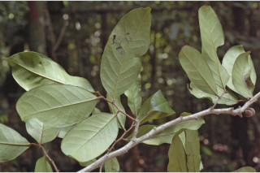
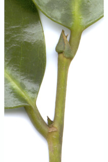
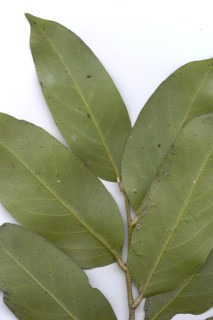
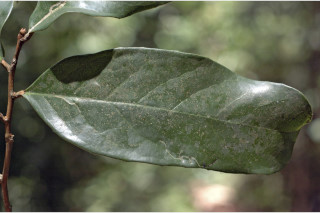
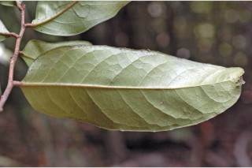
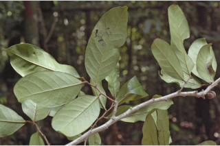
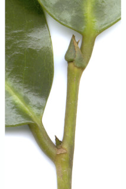
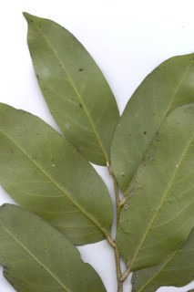
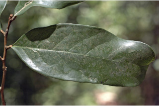
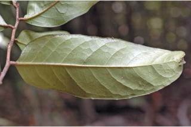
 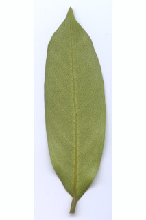
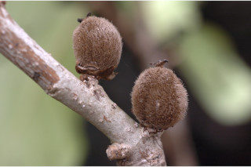
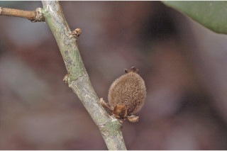
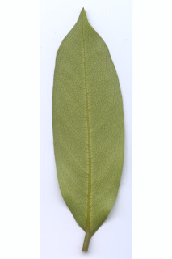
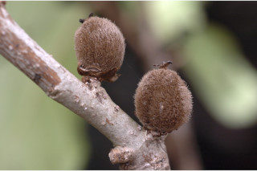
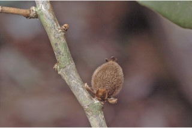